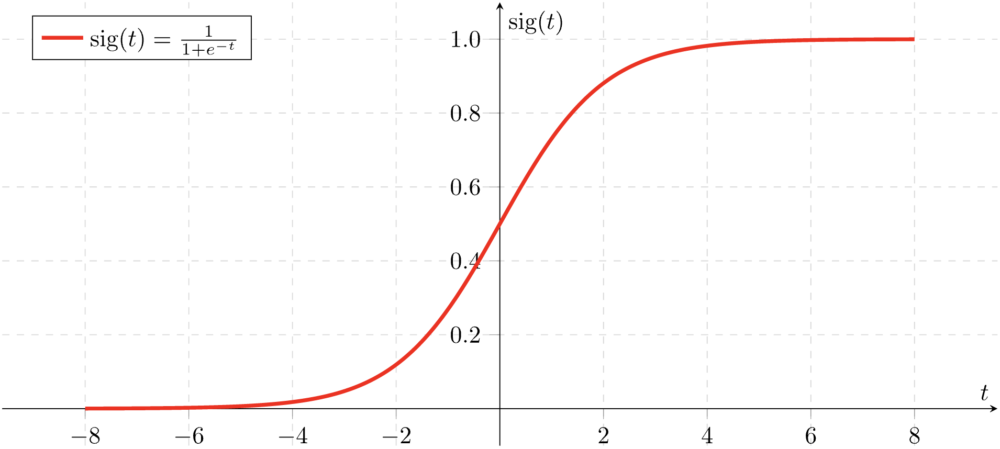

Logistic Regression
Contents
Logistic Regression¶
Announcements¶
I have notecards. Ask if you need one.
Videos posted for next week. Mostly review of overfitting. Due Tuesday (not the usual Thursday).
Midterm is Thursday next week.
A sample midterm is posted on the Week 8 page on Canvas. Yasmeen will go over solutions in discussion section on Tuesday.
Only one in-class quiz left, Tuesday of Week 10.
The main categories for Machine Learning¶
Machine Learning is divided into two broad categories.
Unsupervised learning - In unsupervised learning, we do not have labels or “correct answers” for our data. Clustering (such as K-Means clustering) is an example of unsupervised learning.
Supervised learning - In supervised learning, the data (or at least some of the data) does include labels. Our goal in supervised learning is to define a model that can correctly output these labels.
Within supervised learning, there are again two major sub-categories.
Regression - The target is a numeric value, such as the price of a house. Linear regression or polynomial regression are the examples of regression we have seen.
Classification - The target value is one out of a discrete set of categories, such as Yes or No, whether a house sold, or a species of penguin. Somewhat confusingly, logistic regression is an example of classification (not of regression).
In class, we briefly discussed why handwritten digit classification should be considered a classification problem, even though the outputs can be considered to be numbers. One intuition for this is to ask yourself, if there were an output like 4.3, how would you want to interpret that? If we are estimating “number of bedrooms” or “years in college”, this kind of output makes perfect sense. But if we are trying to classify a handwritten digit, an answer like 4.3 does not make sense. (A digit 4 looks nothing like a digit 5, so for the purposes of this problem, the ordering of the digits does not matter.)
The sigmoid function¶
The basic idea of logistic regression (in the case of two outputs) is to try to write a function which outputs, not the class directly, but the probability of that class. The probability is modeled by the sigmoid function,
Here is the graph of the sigmoid function:
 Source: Wikimedia commons
{kind=link}
If you’d like to read more details about logistic regression, here are some recommended resources.
Recommended YouTube video by codebasics.
Wikipedia article. Especially the example on the probability of passing an exam is helpful.
Chapter 4 of Hands on Machine Learning. (Within Chapter 4, scroll down to the section on Logistic Regression.)
Penguins example¶
Using the penguins dataset from Seaborn, fit a logistic regression model to classify whether or not a penguin is in the Chinstrap species, using its flipper length and its bill length.
import numpy as np
import pandas as pd
import altair as alt
import seaborn as sns
df = sns.load_dataset("penguins").dropna()
cols = ["flipper_length_mm", "bill_length_mm"]
alt.Chart(df).mark_circle().encode(
x=alt.X("flipper_length_mm", scale=alt.Scale(zero=False)),
y=alt.Y("bill_length_mm", scale=alt.Scale(zero=False)),
color="species"
)
df["species"] == "Chinstrap"
0 False
1 False
2 False
4 False
5 False
...
338 False
340 False
341 False
342 False
343 False
Name: species, Length: 333, dtype: bool
(df["species"] == "Chinstrap").sum()
68
We are performing binary classification in this example, meaning that there are only two classes we are considering, “Chinstrap” and “Other”. We add a Boolean column to the DataFrame with True if the species is “Chinstrap” and with False otherwise.
One advantage to performing binary classification, as opposed to multiclass classification, is that the coefficients found during this fitting process will be easier to interpret.
df["is_Chinstrap"] = (df["species"] == "Chinstrap")
df.head()
| species | island | bill_length_mm | bill_depth_mm | flipper_length_mm | body_mass_g | sex | is_Chinstrap | |
|---|---|---|---|---|---|---|---|---|
| 0 | Adelie | Torgersen | 39.1 | 18.7 | 181.0 | 3750.0 | Male | False |
| 1 | Adelie | Torgersen | 39.5 | 17.4 | 186.0 | 3800.0 | Female | False |
| 2 | Adelie | Torgersen | 40.3 | 18.0 | 195.0 | 3250.0 | Female | False |
| 4 | Adelie | Torgersen | 36.7 | 19.3 | 193.0 | 3450.0 | Female | False |
| 5 | Adelie | Torgersen | 39.3 | 20.6 | 190.0 | 3650.0 | Male | False |
from sklearn.model_selection import train_test_split
df[cols]
| flipper_length_mm | bill_length_mm | |
|---|---|---|
| 0 | 181.0 | 39.1 |
| 1 | 186.0 | 39.5 |
| 2 | 195.0 | 40.3 |
| 4 | 193.0 | 36.7 |
| 5 | 190.0 | 39.3 |
| ... | ... | ... |
| 338 | 214.0 | 47.2 |
| 340 | 215.0 | 46.8 |
| 341 | 222.0 | 50.4 |
| 342 | 212.0 | 45.2 |
| 343 | 213.0 | 49.9 |
333 rows × 2 columns
X_train, X_test, y_train, y_test = train_test_split(df[cols], df["is_Chinstrap"], test_size=0.2, random_state=0)
X_test
| flipper_length_mm | bill_length_mm | |
|---|---|---|
| 62 | 185.0 | 37.6 |
| 60 | 185.0 | 35.7 |
| 283 | 231.0 | 54.3 |
| 107 | 190.0 | 38.2 |
| 65 | 192.0 | 41.6 |
| ... | ... | ... |
| 122 | 176.0 | 40.2 |
| 298 | 215.0 | 45.2 |
| 22 | 189.0 | 35.9 |
| 151 | 201.0 | 41.5 |
| 252 | 207.0 | 45.1 |
67 rows × 2 columns
Notice how the index for y_test perfectly matches the index for X_test.
y_test
62 False
60 False
283 False
107 False
65 False
...
122 False
298 False
22 False
151 False
252 False
Name: is_Chinstrap, Length: 67, dtype: bool
To perform logistic regression using scikit-learn, we will follow the usual pattern of import, instantiate, fit, predict.
from sklearn.linear_model import LogisticRegression
It’s best to use a variable name like clf as opposed to reg to remind ourselves that we are performing classification, not regression.
clf = LogisticRegression()
clf.fit(X_train, y_train)
LogisticRegression()
clf.predict(X_test)
array([False, False, False, False, False, False, True, False, False,
True, False, False, False, True, False, False, False, False,
True, False, False, False, False, False, False, False, False,
False, False, False, False, True, False, False, False, False,
True, False, True, False, False, False, False, False, False,
False, False, False, False, False, False, False, False, False,
False, False, False, False, False, False, False, False, True,
False, False, False, False])
Let’s determine what percentage of accuracy we had on the test set.
y_test
62 False
60 False
283 False
107 False
65 False
...
122 False
298 False
22 False
151 False
252 False
Name: is_Chinstrap, Length: 67, dtype: bool
# How often were we correct?
(clf.predict(X_test) == y_test).sum()
63
# What proportion were we correct?
(clf.predict(X_test) == y_test).sum()/len(X_test)
0.9402985074626866
There is a quicker way to get this number, using the classifier’s score method.
clf.score(X_test, y_test)
0.9402985074626866
This accuracy is so high, we don’t have to be too worried about overfitting, but it’s still a good idea to check and see if the performance is much better on the training set. Here it is a little better.
clf.score(X_train, y_train)
0.9624060150375939
(Fun aside that we briefly discussed. Say we are performing binary classification on the MNIST dataset, trying to determine if a handwritten digit is 5 or not. Why is 90% accuracy not impressive in this case?)
cols
['flipper_length_mm', 'bill_length_mm']
The “learning” in “machine learning” for this case of logistic regression is finding the following three constants, two coefficients and one intercept or bias.
clf.coef_
array([[-0.38263519, 1.17201067]])
Think of the above 2 coefficients as being coefficients of the values in the columns listed in cols.
clf.intercept_
array([20.93321887])
The sigmoid function \(\sigma(x)\) is one of the most natural functions to use if you want to model a probability. (See the graph of sigmoid above.)
sigmoid = lambda x: 1/(1+np.exp(-x))
sigmoid(0)
0.5
sigmoid(10)
0.9999546021312976
cols
['flipper_length_mm', 'bill_length_mm']
clf.coef_
array([[-0.38263519, 1.17201067]])
Here we do array unpacking. We have to use [0] because the array we want is inside another array.
flip_coef, bill_coef = clf.coef_[0]
Here we check that we saved the coefficient correctly.
flip_coef
-0.3826351932141686
What does our model predict if the flipper has length 200mm and the bill has length 50mm?
flip = 200
bill = 50
Here is the value we want to input into the sigmoid function. Because this next equation is a linear function (degree 1), that is why logistic regression is considered a linear model.
flip_coef*flip + bill_coef*bill + clf.intercept_
array([3.00671389])
Let’s plug that number into the sigmoid.
sigmoid(flip_coef*flip + bill_coef*bill + clf.intercept_)
array([0.95287652])
We can interpret this as saying our model thinks our penguin has a 95.3% chance of being a Chinstrap penguin. Do we get the same result using clf.predict?
The following is a very common mistake. We need to input something 2-dimensional, not something like a one-dimensional list.
clf.predict([flip, bill])
/Users/christopherdavis/miniconda3/envs/math10s22/lib/python3.7/site-packages/sklearn/base.py:451: UserWarning: X does not have valid feature names, but LogisticRegression was fitted with feature names
"X does not have valid feature names, but"
---------------------------------------------------------------------------
ValueError Traceback (most recent call last)
/var/folders/8j/gshrlmtn7dg4qtztj4d4t_w40000gn/T/ipykernel_7591/2215702033.py in <module>
----> 1 clf.predict([flip, bill])
~/miniconda3/envs/math10s22/lib/python3.7/site-packages/sklearn/linear_model/_base.py in predict(self, X)
423 Vector containing the class labels for each sample.
424 """
--> 425 scores = self.decision_function(X)
426 if len(scores.shape) == 1:
427 indices = (scores > 0).astype(int)
~/miniconda3/envs/math10s22/lib/python3.7/site-packages/sklearn/linear_model/_base.py in decision_function(self, X)
405 check_is_fitted(self)
406
--> 407 X = self._validate_data(X, accept_sparse="csr", reset=False)
408 scores = safe_sparse_dot(X, self.coef_.T, dense_output=True) + self.intercept_
409 return scores.ravel() if scores.shape[1] == 1 else scores
~/miniconda3/envs/math10s22/lib/python3.7/site-packages/sklearn/base.py in _validate_data(self, X, y, reset, validate_separately, **check_params)
564 raise ValueError("Validation should be done on X, y or both.")
565 elif not no_val_X and no_val_y:
--> 566 X = check_array(X, **check_params)
567 out = X
568 elif no_val_X and not no_val_y:
~/miniconda3/envs/math10s22/lib/python3.7/site-packages/sklearn/utils/validation.py in check_array(array, accept_sparse, accept_large_sparse, dtype, order, copy, force_all_finite, ensure_2d, allow_nd, ensure_min_samples, ensure_min_features, estimator)
771 "Reshape your data either using array.reshape(-1, 1) if "
772 "your data has a single feature or array.reshape(1, -1) "
--> 773 "if it contains a single sample.".format(array)
774 )
775
ValueError: Expected 2D array, got 1D array instead:
array=[200 50].
Reshape your data either using array.reshape(-1, 1) if your data has a single feature or array.reshape(1, -1) if it contains a single sample.
Here we still get a warning (because our original DataFrame had column names but here we are not using column names), but the computation executes fine.
We get the output of True, which matches our 95.3% confidence, but how do we know our computation was correct?
clf.predict([[flip, bill]])
/Users/christopherdavis/miniconda3/envs/math10s22/lib/python3.7/site-packages/sklearn/base.py:451: UserWarning: X does not have valid feature names, but LogisticRegression was fitted with feature names
"X does not have valid feature names, but"
array([ True])
We can use predict_proba to see that same 0.95287652 value. It corresponds to the probability of Chinstrap. The other displayed number is the probability of the penguin not being a Chinstrap.
clf.predict_proba([[flip, bill]])
/Users/christopherdavis/miniconda3/envs/math10s22/lib/python3.7/site-packages/sklearn/base.py:451: UserWarning: X does not have valid feature names, but LogisticRegression was fitted with feature names
"X does not have valid feature names, but"
array([[0.04712348, 0.95287652]])